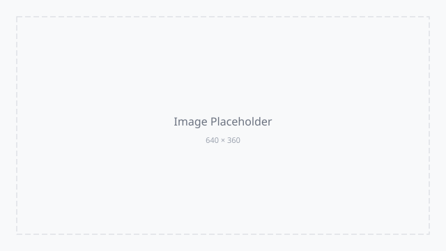

产品决策的底层逻辑
好的产品决策不来自直觉，而来自可复用的判断框架。
原创 慢思录 ｜ 2026.06.13
大多数团队的决策方式是：谁嗓门大听谁的。这不是决策，这是权力分配。 旧的 经验主义 模式正在被取代，可复现的判断力 才是团队最需要的。
好的决策系统不是消除分歧，而是让分歧在正确的层面发生。
01╱决策质量比速度更重要
注决策速度和质量不是对立的。好的框架能让团队更短时间内做出更高质量的判断。
1.事实层：我们知道什么？
2.判断层：基于事实，我们相信什么？
3.行动层：基于判断，我们做什么？
笺下次争论时，先确认：我们在争论事实，还是在争论解读？
02╱五步决策框架
PYTHON
def decide(ctx): return validate(rank(collect(ctx)))
步骤动作时间定义问题对齐矛盾30 分钟收集信号数据 + 访谈2-3 天形成假设团队共创1 小时
警框架是工具，不是教条。环境剧变时灵活调整比严格遵循更重要。
学会不做决策，是产品经理最重要的能力之一。
·
决策陷阱
•[ ] 每周回顾关键决策
•[x] 记录判断依据
○决策记录不是为了追责，而是为了学习。
○复盘是为了校准判断力。

可持续迭代的决策系统比单次决策更有价值。好的决策来自普通人用对的框架反复练习。